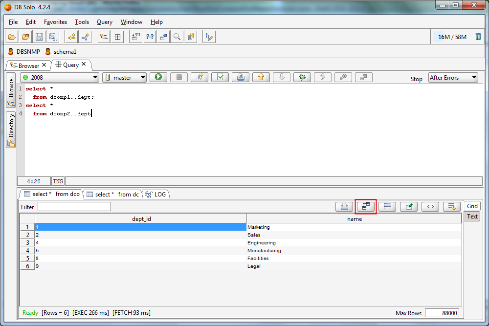
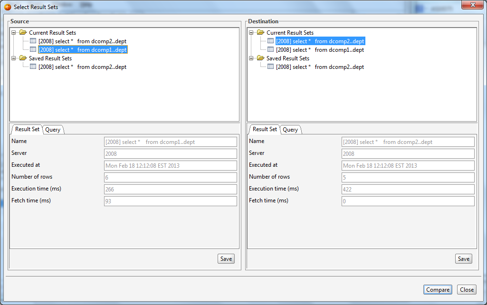
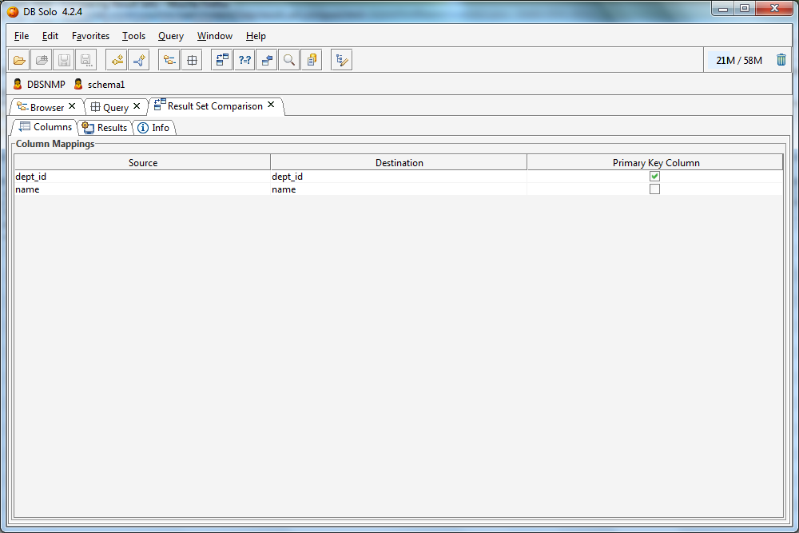
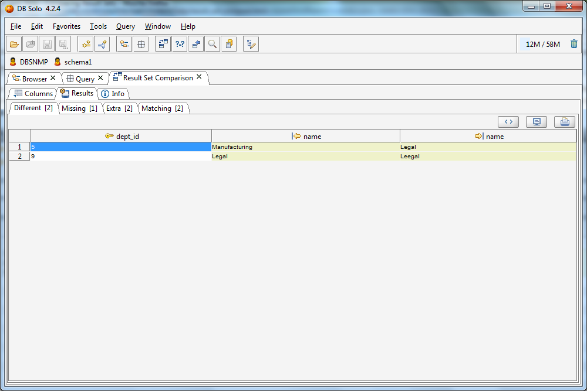
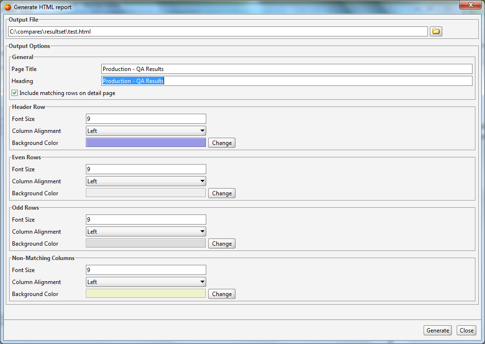
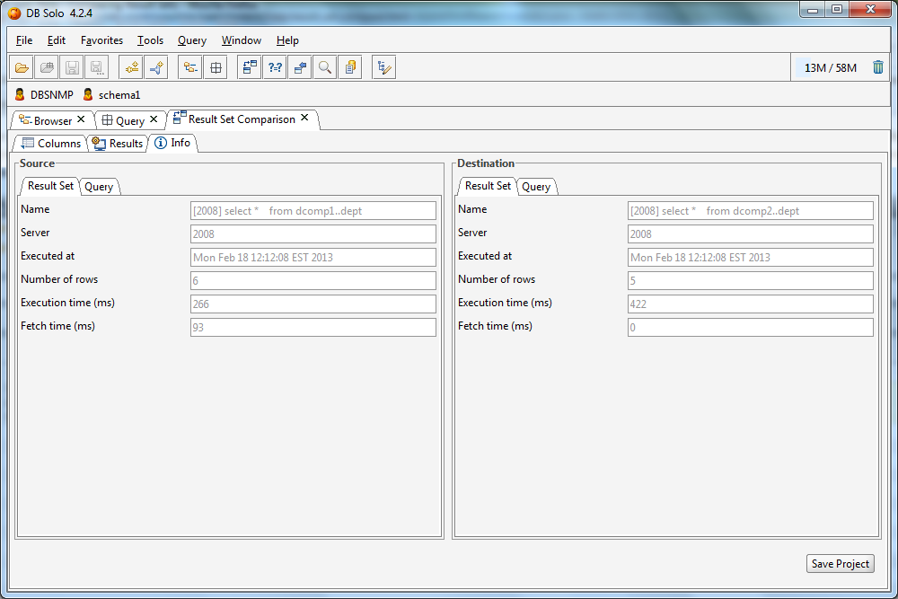
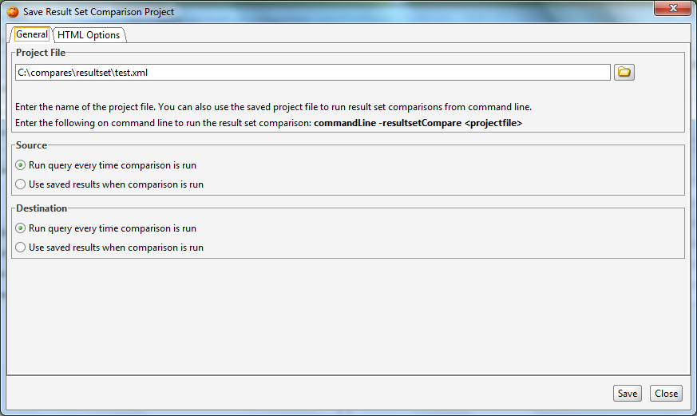

The result set comparison feature allows one to quickly compare data rows from two different result sets. To run comparisons from the command line or to have more control over the comparison process one should use the Data Compare Tool instead. To compare two result sets, start by clicking on the 'Compare Result Sets' button above one of the result sets in the Query Editor. Alternatively, you can choose Query/Compare Result Sets from the main menu (Ctrl+Alt+C). This will bring up the 'Select Results Sets' dialog that allows you to select the result sets to compare.

The 'Select Result Sets' dialog allows you to select the result sets to be compared as well as save current result sets for later comparison. The selected result sets can either be previously saved result sets or active result sets from open Query Editor tabs. The dialog will show all result sets from all open Query Editors, not just the currently active Query Editor. The active result sets appear under the 'Current Result Sets' node in the tree whereas saved result sets appear under the 'Saved Result Sets' node. To save a result set, first select it under the 'Current Result Sets', then click on the 'Save' button in the detail panel below the corresponding tree control.

The 'Columns' tab allows you to pick the primary key columns(s) for the comparison. At least one column needs to be selected, and the selected columns must uniquely identify every row in both result sets. After selecting the primary key column(s), click on the 'Results' tab to start the comparison process.

The results panel has four child panels; Different, Missing, Extra and Matching. The 'Different' panel shows all the rows that exist on both sides but some of the column values differ. The 'Missing' panel shows rows that exist on the destination side but do not exist in the source result set. By the same token, the 'Extra' panel shows rows that are present in the source result set but do not appear in the destination result set. Finally the 'Matching' panel contains rows that are present on both sides and whose column values match.

The results panel has a button for generating an HTML report from the comparison results. When you click on the HTML report button, a dialog will be shown that allows you to configure the output generated for the HTML report, including the colors and font sizes used for the HTML report. After customizing the report options, click on the 'Generate' button to generate the HTML report file in the location you have specified.

The 'Info' tab shows information regarding the source and destination result sets, including when the query was executed and how long it took to execute and fetch the results. The 'Query' tab within the 'Info' panel shows the actual query that was executed. This information is showed for both current and saved result sets.

The 'Save Project' button on the Info Page allows you to save the comparison settings to a project file.
After saving the settings to a project file you can use the command line tool to run the comparisons with the same settings and generate an HTML report from the results. When you save the project file, you have to option to specify if you want the query to be run every time the comparison is run from the command line or if the comparison should be run against the saved results.

The result set comparison can be run from a command shell using settings from a saved project file. This allows you to run data comparisons regularly using cron or a similar mechanism. The following shell command will run a result set comparison from settings in 'myproject.xml':
commandLine -resultsetCompare myproject.xml
where 'myproject.xml' is a project file. You can use project files on different machines as long as the configured server connection names match and you are not using saved result sets. Notice that the saved project files are xml text files that can be edited manually outside DB Solo.
The command line tool will output errors and other messages in resultsetCompare.log file.
| Back to Index |
DB Solo www.dbsolo.com support@dbsolo.com |